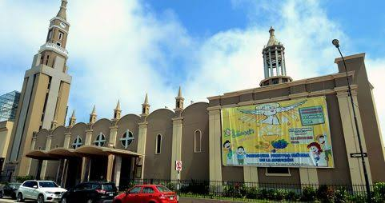
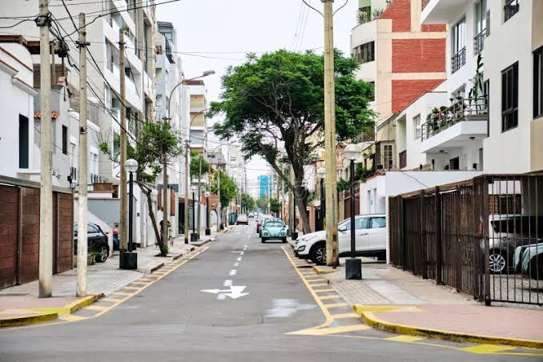
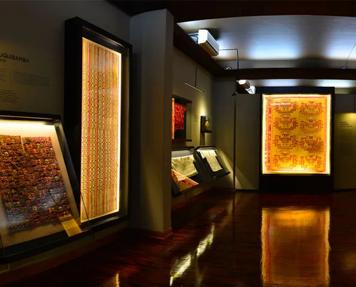
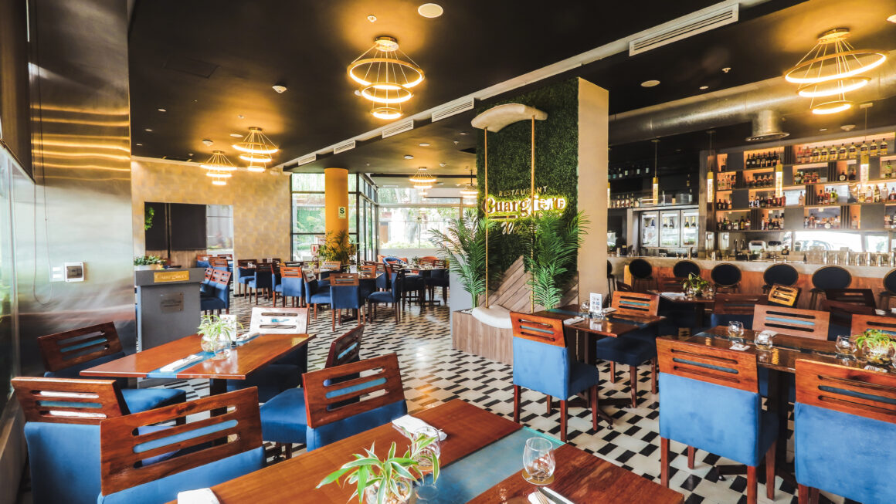
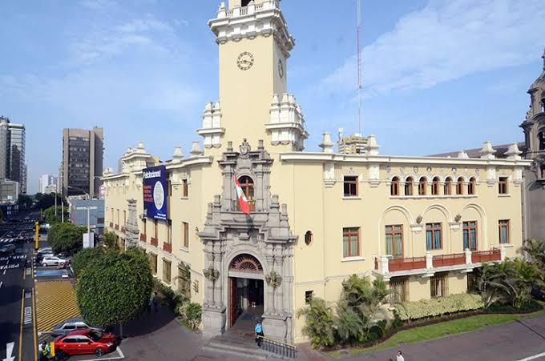
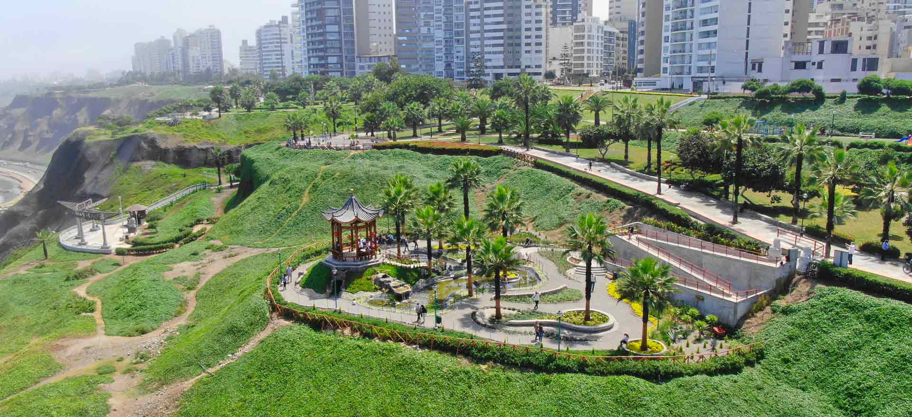

Historia y patrimonio
Miraflores conserva importantes espacios históricos como la Huaca Pucllana y construcciones que forman parte de su patrimonio.
.jpg)
Miraflores es reconocida como una ciudad turística por excelencia. Su historia se remonta a los vestigios encontrados en la zona arqueológica de la Huaca Pucllana, antiguo centro ceremonial de la Cultura Lima.
En sus calles conviven antiguas mansiones, construcciones modernas, centros comerciales, restaurantes, galerías de arte y diversos espacios culturales.
Sus malecones, parques y miradores permiten apreciar la belleza del litoral y disfrutar de una ciudad llena de historia y naturaleza.
Explorar la ciudadDescubre algunos de los aspectos que hacen especial a nuestro distrito.
Miraflores conserva importantes espacios históricos como la Huaca Pucllana y construcciones que forman parte de su patrimonio.
Sus malecones y miradores ofrecen vistas al océano Pacífico y espacios para caminar, descansar y disfrutar del paisaje.
Los parques de Miraflores son lugares de encuentro y recreación para vecinos y visitantes.
El distrito reúne restaurantes y establecimientos que ofrecen diferentes especialidades de la gastronomía peruana e internacional.
Galerías, teatros, ferias y actividades culturales forman parte de la vida del distrito.
Miraflores cuenta con centros comerciales, tiendas artesanales, hoteles y espacios turísticos.
Explora los espacios que forman parte de la identidad de Miraflores.

Historia, tradiciones y espacios representativos.

Conoce parte del patrimonio religioso del distrito.

Descubre sus calles, avenidas y espacios urbanos.

Espacios dedicados a la memoria y la cultura.

Sabores de la cocina peruana e internacional.

Espacios que conservan la historia de Miraflores.
.jpg)
El paisaje costero y las playas del distrito.

Áreas verdes y espacios de recreación.
Información sobre iniciativas y desarrollo urbano de Miraflores.
Información sobre obras municipales.
Plan Maestro de Desarrollo de Costa Verde 2026–2040.
Programa EcoHogares de Miraflores.
Visita nuestras otras secciones o comunícate con nosotros.